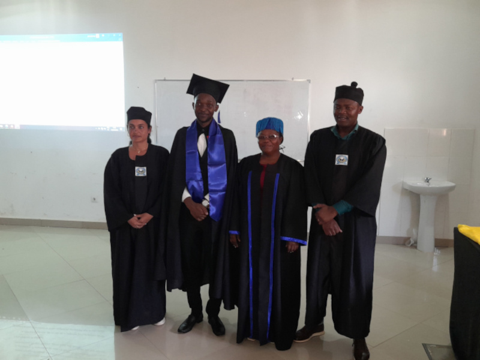
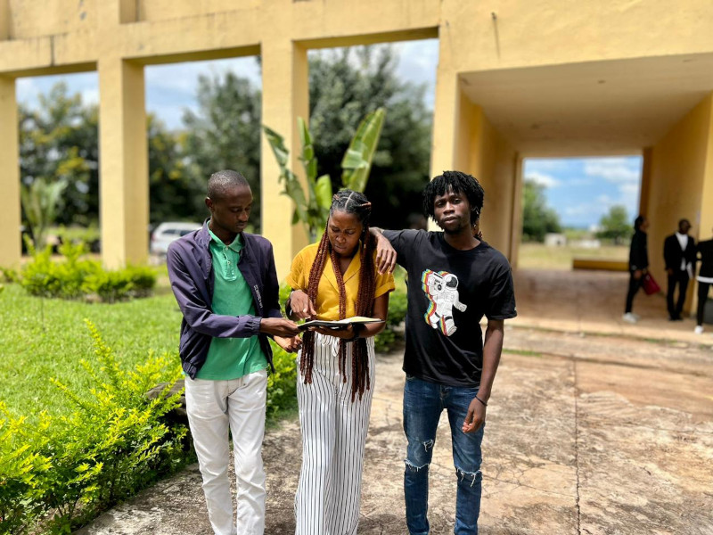
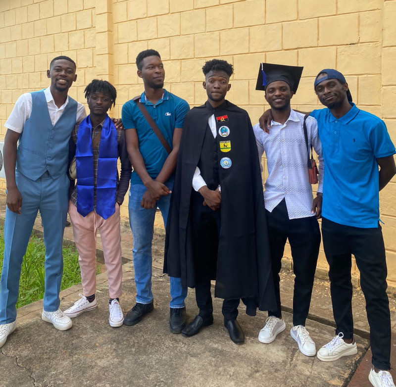

O Instituto Superior Politécnico Cardeal Dom Alexandre do Nascimento (ISPCAN) é uma instituição de ensino superior localizada na província de Malanje, Angola. Fundado com o objetivo de proporcionar educação de qualidade e formar profissionais competentes, o ISPCAN tem se destacado como um centro de excelência acadêmica e pesquisa.
Nossa Missão
A missão do ISPCAN é oferecer uma educação superior de qualidade, promover a pesquisa científica e contribuir para o desenvolvimento socioeconômico da região e do país. A instituição busca formar cidadãos éticos, críticos e comprometidos com o progresso e a inovação.
Os valores do ISPCAN incluem a excelência acadêmica, a ética, a responsabilidade social, a inovação, a inclusão e o compromisso com a comunidade.
O ISPCAN oferece uma ampla gama de cursos de graduação e pós-graduação nas áreas de engenharia, ciências sociais e ciências da saúde. Os programas são desenvolvidos para atender às demandas do mercado de trabalho e proporcionar uma formação abrangente e atualizada.
Pesquisa e Conhecimento
O ISPCAN investe fortemente em pesquisa e extensão, incentivando a produção científica e a aplicação do conhecimento em projetos que beneficiem a comunidade. A instituição promove a inovação do ensino, contribuindo para o desenvolvimento sustentável da região.
Comunidade Acadêmica
A comunidade acadêmica do ISPCAN é composta por estudantes, professores, pesquisadores e funcionários comprometidos com a excelência educacional. A instituição promove a participação ativa e o engajamento de todos os membros, criando um ambiente colaborativo e inclusivo.
O Instituto Superior Politécnico Cardeal Dom Alexandre do Nascimento é uma instituição comprometida com a formação de profissionais competentes e com o desenvolvimento científico e tecnológico de Angola. Com uma infraestrutura moderna, uma oferta diversificada de cursos e um forte compromisso com a pesquisa e a extensão, o ISPCAN se posiciona como um pilar importante para o progresso educacional e socioeconômico do país